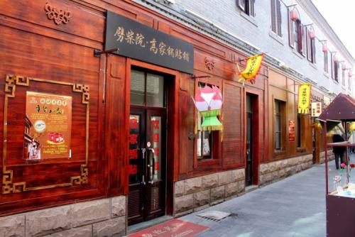
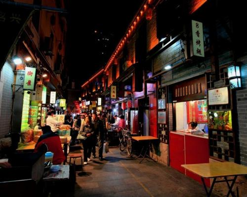
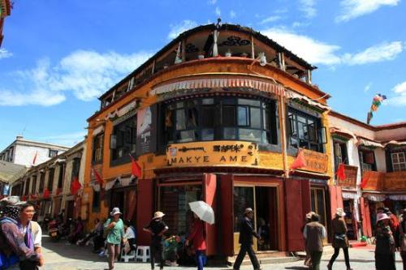
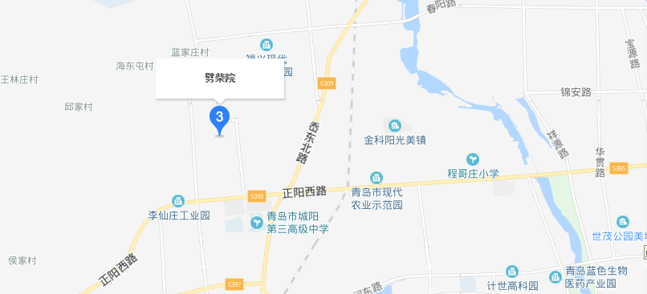

劈柴院
时间：2019/11/11
【简介】 | ||
|---|---|---|
|  |  | |
|
劈柴院位于青岛市市南区中山路商业圈，是中山路、北京路、河北路和天津路围合的街坊。其实劈柴院有个路名叫江宁路，德国占领青岛后，于1902年修建了此路。 它是“卜”字形，东端连着中山路，北边连北京路，西边通河北路。“江宁”是南京的古称，这里也是青岛最早的“南京路”。5月--10月最佳，这段时间也是青岛的旅游旺季，各类海鲜都比较新鲜。 解放后，在“三大改造”中，艺人及摊贩都组织了起来，离开了劈柴院，只余下了元惠堂等几家饭店，这里逐渐成了居民区。新时期以来，江宁路西段新开了十几家饭店经营海鲜及炉包、馄饨、甜沫等风味小吃，被称为小吃一条街。 到上世纪40年代馄饨、锅饼、炉包和豆腐脑等名吃汇集劈柴院，这里成为岛最早的美食城。曾有歌女(演员)达23人。此处还有苗心诚说书场等曲艺场。在院子里则是“撂地’的艺人，即露天演出。 |
缘由：至于劈柴院这名字的来历，有人说，这里原先是个“劈柴市”，全是卖劈柴的。还有人说，这些劈柴除了供市民烧火做饭，还供应大窑沟窑炉烧制砖瓦等等。在刘筠的诗集《青岛百吟》中，我们看到了这样一段注释：“劈柴院近中山路，最繁闹之区。院内皆劈柴架屋，故名。 贵人不屑一顾，然房租轻而价廉，穷措大得往来其中焉。”这就是说，劈柴院是因为里面盖了许多临时的商用“劈柴屋”而得名的。这些“劈柴屋”，为一些老青岛人所熟知，大多是一些随意搭建的破板房，低矮潮湿。 从上个世纪20年代中期，青岛建为城市后，在这里修了一条江宁路， 建了几个大院，江宁路逐渐成了一条商业步行街，街上几个大院多为商店、饭铺，劈柴院从一个院子的名称成了这一商业街的名称。 |
|
【历史沿革】
劈柴院像 老北京东安市场一样，是个门类齐全的市场，40年代《青岛晚报》设有“劈柴院”的栏目，每天报道这里的新闻。老青岛人几乎没有没去过劈柴院的，外地来青岛的也多去劈柴院。江宁路有二十几个院，整条街和几个院是商业、餐饮、娱乐集中的地区，是青岛人逛街的集中去处。 劈柴院的热闹是出了名的，许多南来北往的小客商也时常住进这里，为的就是享受一下这里的“码头文化”。曾是青岛平民娱乐中心。上海的大光明电影院曾是全国最大、设备最好的电影院，这里的一家电影院也叫大光明，却只能容100多个座位，以后成为演出地方戏的戏院，解放后是三好魔术团， 是一个家庭三代人组成的魔术团，演员及售票服务者全是一家人。劈柴院有鲜艳茶社、永安茶社、共乐茶社等几家茶社。曾有歌女(演员)达23人。此处还有苗心诚说书场等曲艺场。在院子里则是“撂地’的艺人，即露天演出，摆上几条或十几条长凳，演完一段就收钱，站着看的可以不交钱，坐着的则一定要交钱。还有些测字、算卦的散落在江宁路上。
【交通信息】
2路、5路、205路、218路、222路、228路、231路、301路、305路、320路、325路、366路、隧道3路、隧道7路。